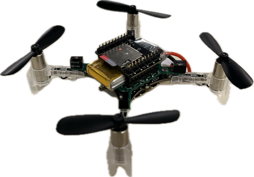

Learned Incremental Nonlinear Dynamic Inversion for Quadrotors with and without Slung Payloads
Eckart Cobo-Briesewitz, Khaled Wahba and Wolfgang Hönig
Accepted to L4DC 2026

Hello! I'm Eckart, a Master's student in Computer Science at the Technische Universität Berlin. I'm interested in the intersection of robotics and machine learning. Since May 2023, I've been working as a student research assistant at the Learning and Intelligent Systems Lab at TU Berlin. Previously, I worked part-time at the Fraunhofer FOKUS institute. I completed my bachelor's thesis at the Intelligent Multi-Robot Coordination Lab at TU Berlin.
Eckart Cobo-Briesewitz, Khaled Wahba and Wolfgang Hönig
Accepted to L4DC 2026